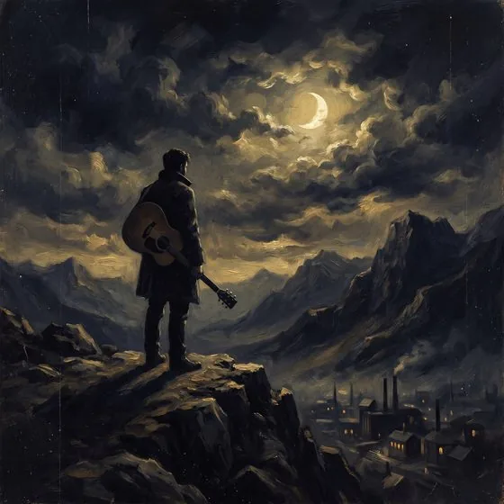
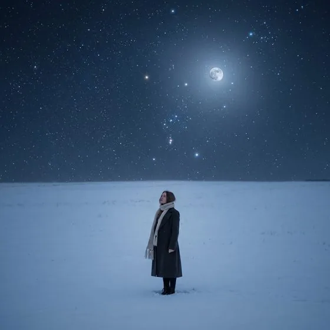
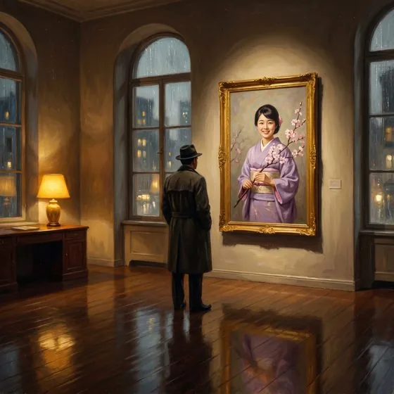
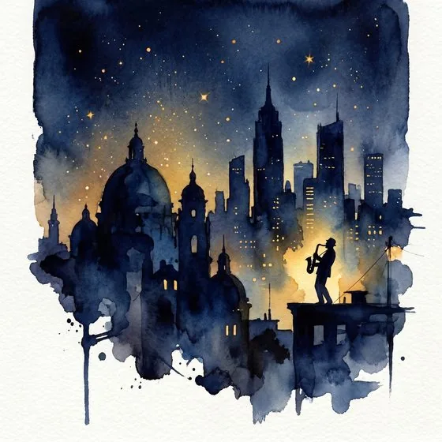
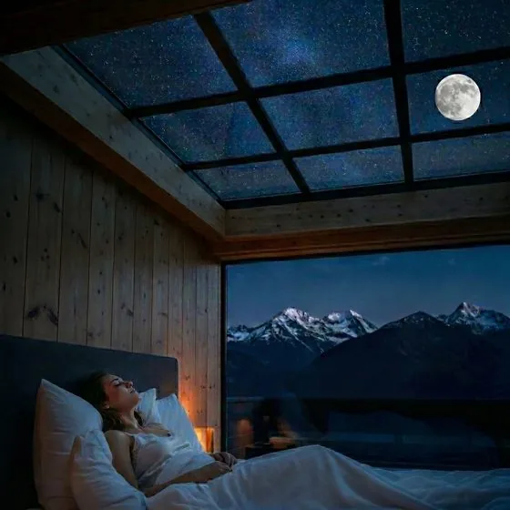

Превращаю стихи в песни, а песни — в маленькие фильмы.





Константин Захаров — автор-исполнитель. Городской романс и лирический поп — о любви, утрате и внутренней силе. Превращаю стихи в песни, а песни — в маленькие фильмы: музыка, клипы, визуальные истории. С 2026 года выпускаю треки под лейблом ANTKSL через дистрибьютора 682 Distribution — на всех крупных площадках: Яндекс Музыке, Apple Music, Spotify и ВКонтакте. Более 10 синглов с мая по август 2026 года.
Обновлено: август 2026
Короткие вертикальные истории — здесь живёт мелодия песни. Услышь её в рилзе, а потом слушай целиком: трек уже вышел или совсем скоро появится на всех площадках.
Маленькие фильмы к песням. Выбери площадку и смотри прямо здесь.
Если моя музыка отзывается в вашем сердце — вы можете поддержать создание новых песен. Спасибо, что вы рядом.